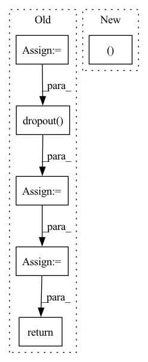

Pattern ID :14376

Before Change
key = reshape(self.key(key_flat)).transpose(2, 3)
value = reshape(self.value(key_flat))
attn = torch.matmul(query, key) / sqrt(self.dim_head)
mask, start_mask = causal_mask(height * width)
mask = mask.type_as(query)
start_mask = start_mask.type_as(query)
attn = attn.masked_fill(mask == 0, -1e4)
attn = torch.softmax(attn, 3) * start_mask
attn = self.dropout(attn)
out = attn @ value
out = out.transpose(1, 2).reshape(
batch, height, width, self.dim_head * self.n_head
)
out = out.permute(0, 3, 1, 2)
return out
class PixelBlock(HelperModule):
def build(
After Change
attn = (q @ k) / sqrt(self.head_dim)
mask, start_mask = causal_mask(height*width)
mask, start_mask = mask.type_as(q), start_mask.type_as(q)
attn = attn.masked_fill(mask == 0, -1e4)
attn = torch.softmax(attn, dim=3) * start_mask
In pattern: SUPERPATTERN
Frequency: 3
Non-data size: 6
Instances
Fragment ID: 47442771
Project Name: vvvm23/vqvae-2
Commit Name: e15b9e3d7c13f912682873648e5aaaf81b1dfec5
Time: 2021-06-02
Author: alexander.f.mckinney@durham.ac.uk
File Name: pixelsnail.py
M Class Name: CausalAttention
N Class Name: CausalAttention
M Method Name: forward(3)
N Method Name: forward(3)
M Parent Class: HelperModule
N Parent Class: HelperModule
M File Name: pixelsnail.py
N File Name: pixelsnail.py
M Start Line: 184
M End Line: 204
N Start Line: 110
N End Line: 130
'>
Before Change
first_h_a = self.initHidden_alpha(x.shape[1])
first_h_b = self.initHidden_beta(x.shape[1])
self.emb = self.embedding(x)
if self.drop < 1:
self.emb = self.dropout(self.emb)
count = np.arange(x.shape[0]) + 1
self.c_t = torch.zeros_like(self.emb) // shape=(seq_len, batch_size, day_dim)
for i, att_timesteps in enumerate(count):
// 按时间步迭代，计算每个时间步的经attention的gru输出
self.c_t[i] = self.attentionStep(first_h_a, first_h_b, att_timesteps)
if self.drop < 1.0:
self.c_t = self.dropout(self.c_t)
// // output层
// y_hat = self.out(self.c_t)
// y_hat = torch.sigmoid(y_hat)
return self.c_t
After Change
return out
def forward(self, x):
batch_size, time_steps, _ = x.size()
x = self.proj(x)
x = self.dropout(x)
'>
Fragment ID: 47442766
Project Name: yhzhu99/covid-ehr-benchmarks
Commit Name: b3d4ba85ad8e8cfeb3e45e07e5fadfa3fd4a25fa
Time: 2022-06-25
Author: yhzhu99@gmail.com
File Name: app/models/backbones/retain.py
M Class Name: RETAIN
N Class Name: RETAIN
M Method Name: forward(2)
N Method Name: forward(2)
M Parent Class: nn.Module
N Parent Class: nn.Module
M File Name: app/models/backbones/retain.py
N File Name: app/models/backbones/retain.py
M Start Line: 64
M End Line: 83
N Start Line: 44
N End Line: 53
'>
Before Change
// (add 1 to account for the embedding layer - the decoder will drop it later)
self_attended_context = context_embedded.all_layers[-(self.args.transformer_layers + 1):]
final_context = context_embedded.last_layer
final_question = question_embedded.last_layer
if self.projection is not None:
final_context = self.dropout(final_context)
final_context = self.projection(final_context)
final_question = self.dropout(final_question)
final_question = self.projection(final_question)
context_rnn_state = None
question_rnn_state = None
if self.args.rnn_layers > 0:
batch_size = context.size(0)
if self.args.rnn_zero_state == "zero":
zero = torch.zeros(self.args.rnn_layers, batch_size, self.args.rnn_dimension,
dtype=torch.float, requires_grad=False, device=context.device)
context_rnn_state = (zero, zero)
question_rnn_state = (zero, zero)
else:
if self.args.rnn_zero_state == "cls":
packed_rnn_state = self.norm(self.pool(context_embedded.last_layer[:, 0, :]))
elif self.args.rnn_zero_state == "average":
masked_final_context = context_embedded.last_layer.masked_fill(context_padding.unsqueeze(2), 0)
summed_context = torch.sum(masked_final_context, dim=1)
average_context = summed_context / context_lengths.unsqueeze(1)
packed_rnn_state = self.norm(self.pool(average_context))
// packed_rnn_state is (batch, 2 * rnn_layers * rnn_dim)
packed_rnn_state = packed_rnn_state.reshape(batch_size, 2, self.args.rnn_layers,
self.args.rnn_dimension)
// transpose to (2, batch, rnn_layers, rnn_dimension)
packed_rnn_state = packed_rnn_state.transpose(0, 1)
// transpose to (2, rnn_layers, batch, rnn_dimension)
packed_rnn_state = packed_rnn_state.transpose(1, 2)
// convert to a tuple of two (rnn_layers, batch, rnn_dimension) tensors
packed_rnn_state = packed_rnn_state.chunk(2, dim=0)
context_rnn_state = (packed_rnn_state[0].squeeze(0), packed_rnn_state[1].squeeze(0))
return self_attended_context, final_context, context_rnn_state, final_question, question_rnn_state
After Change
packed_rnn_state = packed_rnn_state.chunk(2, dim=0)
context_rnn_state = (packed_rnn_state[0].squeeze(0), packed_rnn_state[1].squeeze(0))
return self_attended_context, final_context, context_rnn_state
'>
Fragment ID: 47442780
Project Name: stanford-oval/genienlp
Commit Name: 25cc6202b03c0b3866c249cc83412618eb894797
Time: 2020-12-05
Author: gcampagn@cs.stanford.edu
File Name: genienlp/models/identity_encoder.py
M Class Name: IdentityEncoder
N Class Name: IdentityEncoder
M Method Name: forward(2)
N Method Name: forward(2)
M Parent Class: nn.Module
N Parent Class: nn.Module
M File Name: genienlp/models/identity_encoder.py
N File Name: genienlp/models/identity_encoder.py
M Start Line: 63
M End Line: 116
N Start Line: 70
N End Line: 107